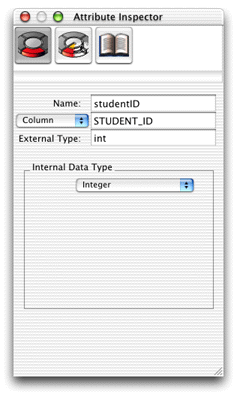
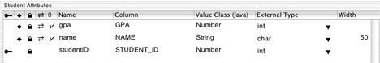

Completing
the Model
Simply creating entities with attributes does not make a complete
model. You must also assign a primary key to the entity and select
certain properties to send to the client. Follow these steps to
complete the basic model:
- Add a third
attribute to the Student entity named "studentID." The column
name is "STUDENT_ID." Give it an external type of
int and
an internal data type of Integer. This
attribute will be the entity's primary key. See Figure 3-7.
Figure
3-7 The primary key attribute

- In table mode (Tools > Table Mode), you'll notice three
icon fields next to each attribute. The key icon denotes a primary
key, the diamond denotes a server-side class property, and the lock
denotes the attribute is used for locking. Make the
studentID attribute
the primary key by clicking in the key field next to it.
- Unmark the primary key (
studentID)
as a server-side class property by clicking the diamond icon to
its left.
Figure 3-8 The
finished model

- To select which attributes are sent to the client, you need
to add a view column in EOModeler. Click the Add Column pop-up menu
and select Client-Side Class Property. This adds a column with two
opposing arrows to the icon fields. Make sure that only the
gpa and name attributes
are selected as client-side class properties, as shown in Figure 3-8.
- Save the model as "Admissions.eomodeld."
© 2002 Apple Computer, Inc. (Last Updated May 1, 2002)